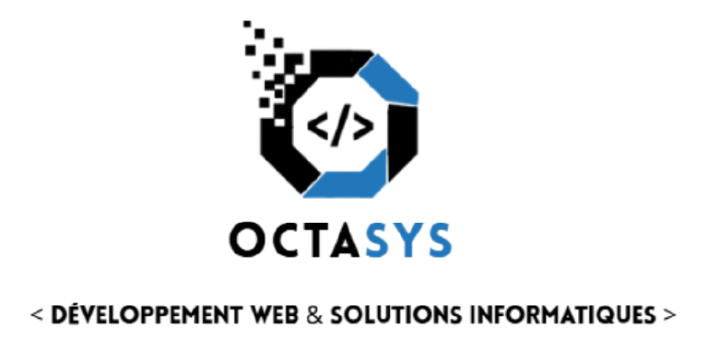
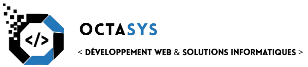

OCTASYS accompagne entreprises et startups de la conception à la mise en production — applications, systèmes, plateformes.
La marque OCTASYS repose sur un système visuel cohérent — logotype, typographie, couleurs — conçu pour incarner précision technique.
Logotype — version principale

Signature — baseline

Palette chromatique
Système typographique
Fondée en 2011 par trois ingénieurs passionnés, OCTASYS a grandi d'une petite agence locale à une référence nationale du développement logiciel sur mesure.
Wendy GIANG, Alexeï BOGDANOV et Alexandre FOSSE se rencontrent lors d'une conférence tech à Lyon. L'intuition est immédiate : le marché manque cruellement de prestataires qui combinent rigueur d'ingénierie et sens du produit. Ils fondent OCTASYS avec un seul client — et une promesse : ne jamais livrer du code médiocre.
Création · Caen · 3 cofondateursL'équipe s'agrandi : Léopold BROUILLARD,Léandro DE MAZZI, Raphaël HAZIZA, Saint-José NGONDJHIAS et Noah QUAGHEBEUR. OCTASYS ouvre un bureau à Paris et décroche ses premiers grands comptes dans les secteurs de la finance et de la santé. L'entreprise structure ses pôles : web, back-end, data et infrastructure cloud — une organisation qui reste son socle aujourd'hui.
Expansion · ParisPendant que le monde s'arrêtait, OCTASYS accélérait. La demande en transformation numérique explose. L'agence accompagne 30 nouveaux clients en 12 mois, développe une offre de télémédecine complète et consolide son savoir-faire.
+100 clientsOCTASYS compte aujourd'hui 8 développeurs. L'agence a livré 67 projets sur 4 continents. Elle prépare l'ouverture d'un troisième bureau. La philosophie reste la même : un code propre, une relation honnête, un produit qui dure.
8 développeurs · 67 projets · Bruxelles 2026Chaque élément graphique de OCTASYS obéit à des règles claires : lisibilité, cohérence, modernité. Un langage visuel qui reflète notre façon de coder.
Du bleu électrique au violet profond : une progression qui symbolise le passage de la donnée brute à la valeur créée — notre cœur de métier.
Syne 800 pour l'impact, DM Sans 300 pour la clarté. Le contraste de graisse crée une hiérarchie immédiate sans artifice superflu.
Le fond sombre place la couleur en relief. L'électrique ressort ; la marque s'impose avec assurance dans les environnements techniques.
Les silences dans la composition sont aussi importants que les formes. L'espace respire ; la marque se lit instantanément à toutes les tailles.
React, Next.js, React Native — des interfaces rapides, accessibles et maintenables. Du prototype à la production en quelques sprints.
APIs RESTful & GraphQL, microservices, bases de données distribuées. Nous concevons des systèmes qui tiennent à l'échelle.
AWS, GCP, Azure. CI/CD, containerisation Docker & Kubernetes. Infrastructure as Code pour une scalabilité sans stress.
Oracle SQL, mySQL, MariaDB et plein d'autre. Transformez vos données brutes en décisions éclairées.
Revue de code, architecture review, plan de migration. Nous regardons là où ça fait mal — et nous proposons ce qui guérit vraiment.
De l'idée à la mise en ligne, OCTASYS vous accompagne à chaque étape. Premier échange gratuit, sans engagement.